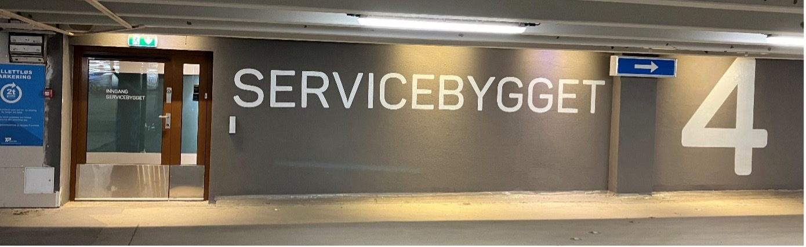
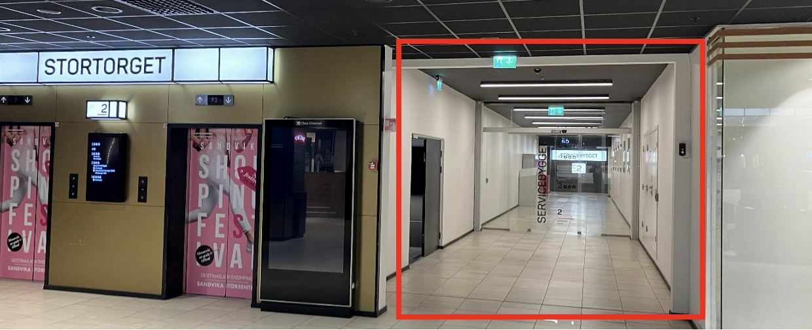
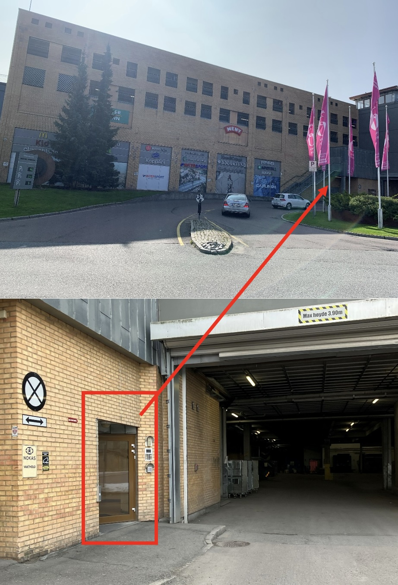

Gå inn glassdør på gateplan merket med «Servicebygget» til venstre for varemottaket ved innkjøring til den gamle delen av senteret.

Det er to HC-plasser til venstre for glassdøren, og inngangen er HC-tilpasset.
Om parkering på Sandvika Storsenter:
Det er billettløs 2 timer gratis parkering mellom kl. 6:15-22:30. Senteret har kameraparkering som betyr at registreringsnummeret blir automatisk lest ved inn- og utkjøring og du trenger ikke trekke P-billett. Parkeringstiden starter og slutter fra tidspunktet du passerer kameraet som leser registreringsnummeret på vei inn og ut av P-huset. Parkerer du innenfor gratistiden trenger du ikke foreta deg noe. Parkerer du utover gratistiden må du betale for parkeringen.
For mer informasjon om parkering på Sandvika Storsenter, se https://sandvikastorsenter.no/praktisk-informasjon/parkering/
Om du kommer inne fra senteret (e. kl. 9)
Gå inn glassdørene til høyre for heisene ved Meny (2.etg. i den gamle delen av senteret).

Fortsett innover gangen og du kommer til Servicebygget. Ta heis eller trapp opp til 4.etg.
Om du kommer til fots før kl. 9
Gå inn glassdør på gateplan merket med «Servicebygget» til venstre for varemottaket ved innkjøring til den gamle delen av senteret.
Ta heis eller trapp opp til 4.etg.

Vennligst ikke nøl med å ta kontakt på telefon eller mail dersom dere har spørsmål.